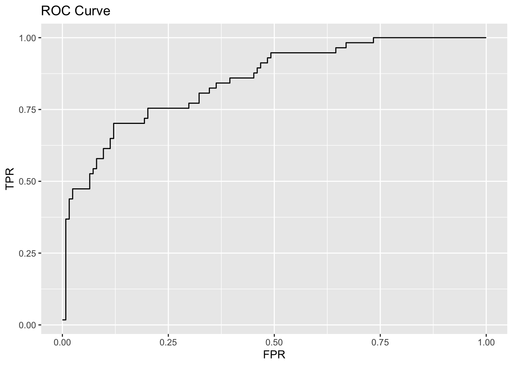

library(tidyverse)
library(skimr)
library(corrplot)
library(ggplot2)
library(GGally)
library(janitor)
library(pracma)---
title: "Classification Metrics"
subtitle: "Homework #2"
format: pdf
author:
- name: Naomi Buell
- name: Richie Rivera
- name: Alexander Simon
- name: Nana Frimpong
- name: Said Naqwe
date: March 22, 2026fi
documentclass: article
classoption: 11pt
geometry:
- margin=1in
header-includes:
- \usepackage{fancyhdr}
- \usepackage{setspace}
- \onehalfspacing
- \pagestyle{fancy}
- \lhead{DATA 621}
- \rhead{Naomi Buell, Richie Rivera, Alexander Simon, Said Naqwe, and Nana Frimpong}
- \setcounter{secnumdepth}{7}
---Homework Solutions
Download the classification output data set (attached in Blackboard to the assignment).
classifications_output_data <- read.csv("classification-output-data (2).csv") classifications_output_data |> skim()Data summary Name classifications_output_da… Number of rows 181 Number of columns 11 _______________________ Column type frequency: numeric 11 ________________________ Group variables None Variable type: numeric
skim_variable n_missing complete_rate mean sd p0 p25 p50 p75 p100 hist pregnant 0 1 3.86 3.24 0.00 1.00 3.00 6.00 15.00 ▇▃▃▁▁ glucose 0 1 118.30 30.48 57.00 99.00 112.00 136.00 197.00 ▂▇▅▂▂ diastolic 0 1 71.70 11.80 38.00 64.00 70.00 78.00 104.00 ▁▅▇▅▁ skinfold 0 1 19.80 15.69 0.00 0.00 22.00 32.00 54.00 ▇▃▆▅▁ insulin 0 1 63.77 88.73 0.00 0.00 0.00 105.00 543.00 ▇▂▁▁▁ bmi 0 1 31.58 6.66 19.40 26.30 31.60 36.00 50.00 ▆▇▇▃▁ pedigree 0 1 0.45 0.28 0.09 0.26 0.39 0.58 2.29 ▇▃▁▁▁ age 0 1 33.31 11.18 21.00 24.00 30.00 41.00 67.00 ▇▃▃▁▁ class 0 1 0.31 0.47 0.00 0.00 0.00 1.00 1.00 ▇▁▁▁▃ scored.class 0 1 0.18 0.38 0.00 0.00 0.00 0.00 1.00 ▇▁▁▁▂ scored.probability 0 1 0.30 0.23 0.02 0.12 0.24 0.43 0.95 ▇▅▂▂▁ The data set has three key columns we will use:
class: the actual class for the observationscored.class: the predicted class for the observation (based on a threshold of 0.5)scored.probability: the predicted probability of success for the observationUse the table() function to get the raw confusion matrix for this scored dataset. Make sure you understand the output. In particular, do the rows represent the actual or predicted class? The columns?
confusion_matrix <- table( classifications_output_data$class, classifications_output_data$scored.class ) confusion_matrix0 1 0 119 5 1 30 27tn <- confusion_matrix[1, 1] fn <- confusion_matrix[2, 1] # print print(paste("True Negatives:", tn))[1] "True Negatives: 119"print(paste("False Negatives:", fn))[1] "False Negatives: 30"The rows represent the actual class (
class) and the columns represent the predicted class (scored.class). For example, there are 119 observations where the actual class is 0 and the predicted class is also 0 (true negatives), and there are 30 observations where the actual class is 1 but the predicted class is 0 (false negatives).
Write a function that takes the data set as a dataframe, with actual and predicted classifications identified, and returns the accuracy of the predictions.
\[ 𝐴𝑐𝑐𝑢𝑟𝑎𝑐𝑦 = \frac{𝑇𝑃 + 𝑇𝑁}{𝑇𝑃 + 𝐹𝑃 + 𝑇𝑁 + 𝐹𝑁} \]
calculate_accuracy <- function(data, actual_col, predicted_col) { confusion_matrix <- table(data[[actual_col]], data[[predicted_col]]) tp <- confusion_matrix[2, 2] tn <- confusion_matrix[1, 1] fp <- confusion_matrix[1, 2] fn <- confusion_matrix[2, 1] accuracy <- (tp + tn) / (tp + fp + tn + fn) return(accuracy) } # Test function accuracy <- calculate_accuracy(classifications_output_data, "class", "scored.class") print(paste("Accuracy:", accuracy))[1] "Accuracy: 0.806629834254144"Write a function that takes the data set as a dataframe, with actual and predicted classifications identified, and returns the classification error rate of the predictions.
\[ 𝐶𝑙𝑎𝑠𝑠𝑖𝑓𝑖𝑐𝑎𝑡𝑖𝑜𝑛 𝐸𝑟𝑟𝑜𝑟 𝑅𝑎𝑡𝑒 = \frac{𝐹𝑃 + 𝐹𝑁}{𝑇𝑃 + 𝐹𝑃 + 𝑇𝑁 + 𝐹𝑁} \]
Verify that you get an accuracy and an error rate that sums to one.
calculate_error_rate <- function(data, actual_col, predicted_col) { confusion_matrix <- table(data[[actual_col]], data[[predicted_col]]) tp <- confusion_matrix[2, 2] tn <- confusion_matrix[1, 1] fp <- confusion_matrix[1, 2] fn <- confusion_matrix[2, 1] error_rate <- (fp + fn) / (tp + fp + tn + fn) return(error_rate) } # Test function error_rate <- calculate_error_rate(classifications_output_data, "class", "scored.class") print(paste("Error Rate:", error_rate))[1] "Error Rate: 0.193370165745856"# Verify that accuracy and error rate sum to 1 print(paste("Sum of accuracy + error rate:", accuracy + error_rate))[1] "Sum of accuracy + error rate: 1"Write a function that takes the data set as a dataframe, with actual and predicted classifications identified, and returns the precision of the predictions.
\[ 𝑃𝑟𝑒𝑐𝑖𝑠𝑖𝑜𝑛 = \frac{𝑇𝑃}{𝑇𝑃 + 𝐹𝑃} \]
# Precision function calculate_precision <- function(data, actual_col, predicted_col) { confusion_matrix <- table(data[[actual_col]], data[[predicted_col]]) tp <- confusion_matrix[2, 2] tn <- confusion_matrix[1, 1] fp <- confusion_matrix[1, 2] fn <- confusion_matrix[2, 1] precision <- tp / (tp + fp) return(precision) } # Test function precision <- calculate_precision(classifications_output_data, "class", "scored.class") print(paste("Precision:", precision))[1] "Precision: 0.84375"Write a function that takes the data set as a dataframe, with actual and predicted classifications identified, and returns the sensitivity of the predictions. Sensitivity is also known as recall.
\[ 𝑆𝑒𝑛𝑠𝑖𝑡𝑖𝑣𝑖𝑡𝑦 = \frac{𝑇𝑃}{𝑇𝑃 + 𝐹𝑁} \]
# Sensitivity function calculate_sensitivity <- function(data, actual_col, predicted_col) { confusion_matrix <- table(data[[actual_col]], data[[predicted_col]]) tp <- confusion_matrix[2, 2] tn <- confusion_matrix[1, 1] fp <- confusion_matrix[1, 2] fn <- confusion_matrix[2, 1] sensitivity <- tp / (tp + fn) return(sensitivity) } # Test function sensitivity <- calculate_sensitivity(classifications_output_data, "class", "scored.class") print(paste("Sensitivity:", sensitivity))[1] "Sensitivity: 0.473684210526316"Write a function that takes the data set as a dataframe, with actual and predicted classifications identified, and returns the specificity of the predictions.
\[ 𝑆𝑝𝑒𝑐𝑖𝑓𝑖𝑐𝑖𝑡𝑦 = \frac{𝑇𝑁}{𝑇𝑁 + 𝐹𝑃} \]
calculate_specificity <- function(data, actual_col, predicted_col) { confusion_matrix <- table(data[[actual_col]], data[[predicted_col]]) tp <- confusion_matrix[2, 2] tn <- confusion_matrix[1, 1] fp <- confusion_matrix[1, 2] fn <- confusion_matrix[2, 1] specificity <- tn / (tn + fp) return(specificity) } # Test function specificity <- calculate_specificity(classifications_output_data, "class", "scored.class") print(paste("Specificity:", specificity))[1] "Specificity: 0.959677419354839"Write a function that takes the data set as a dataframe, with actual and predicted classifications identified, and returns the F1 score of the predictions.
\[ 𝐹1 𝑆𝑐𝑜𝑟𝑒 = \frac{2 × 𝑃𝑟𝑒𝑐𝑖𝑠𝑖𝑜𝑛 × 𝑆𝑒𝑛𝑠𝑖𝑡𝑖𝑣𝑖𝑡𝑦}{𝑃𝑟𝑒𝑐𝑖𝑠𝑖𝑜𝑛 + 𝑆𝑒𝑛𝑠𝑖𝑡𝑖𝑣𝑖𝑡𝑦} \]
# F1 score function calculate_f1 <- function(data, actual_col, predicted_col) { precision <- calculate_precision(data, actual_col, predicted_col) sensitivity <- calculate_sensitivity(data, actual_col, predicted_col) f1_score <- (2 * precision * sensitivity) / (precision + sensitivity) return(f1_score) } # Test function f1_score <- calculate_f1(classifications_output_data, "class", "scored.class") print(paste("F1 Score:", f1_score))[1] "F1 Score: 0.606741573033708"Before we move on, let’s consider a question that was asked: What are the bounds on the F1 score? Show that the F1 score will always be between 0 and 1. (Hint: If 0 < 𝑎 < 1 and 0 < 𝑏 < 1 then 𝑎𝑏 < 𝑎.)
# F1 bounds demonstration # Example values between 0 and 1 precision_test <- 0.7 sensitivity_test <- 0.8 f1_test <- (2 * precision_test * sensitivity_test) / (precision_test + sensitivity_test) print(paste("Example F1 Score:", f1_test))[1] "Example F1 Score: 0.746666666666667"Write a function that generates an ROC curve from a data set with a true classification column (class in our example) and a probability column (scored.probability in our example). Your function should return a list that includes the plot of the ROC curve and a vector that contains the calculated area under the curve (AUC). Note that I recommend using a sequence of thresholds ranging from 0 to 1 at 0.01 intervals.
# calc_auroc() creates a ROC curve and calculates the area under the curve # The inputs are a Boolean vector of known classifications ('labels') and # a numeric vector of probability scores ('scores'). The function returns a # list containing the ROC plot (ggplot object) and numeric AUC value # Adapted from https://www.r-bloggers.com/2025/11/roc-curves-in-two-lines-of-code/ require(pracma) calc_auroc <- function(labels, scores){ # Sort labels by score labels <- labels[order(scores, decreasing = TRUE)] # Calculate TPR and FPR rates_df <- data.frame( TPR = cumsum(labels) / sum(labels), # !labels is the negative class (0) FPR = cumsum(!labels) / sum(!labels)) # Plot ROC curve p <- ggplot(rates_df, aes(x = FPR, y = TPR)) + geom_line() + ggtitle('ROC Curve') # Calculate AUC using trapezoidal approximation AUC <- pracma::trapz(rates_df$FPR, rates_df$TPR) return(list(roc_plot = p, auc_value = AUC)) }# Call the AUROC function with the provided data performance <- calc_auroc(classifications_output_data$class, classifications_output_data$scored.probability)# Show ROC plot performance$roc_plot
# Show AUC value sprintf('The area under the ROC curve is %.2f', performance$auc_value)[1] "The area under the ROC curve is 0.85"Use your created R functions and the provided classification output data set to produce all of the classification metrics discussed above.
accuracy <- calculate_accuracy(classifications_output_data, "class", "scored.class")
error_rate <- calculate_error_rate(classifications_output_data, "class", "scored.class")
precision <- calculate_precision(classifications_output_data, "class", "scored.class")
sensitivity <- calculate_sensitivity(classifications_output_data, "class", "scored.class")
specificity <- calculate_specificity(classifications_output_data, "class", "scored.class")
f1_score <- calculate_f1(classifications_output_data, "class", "scored.class")
# ROC and AUC
performance <- calc_auroc(classifications_output_data$class,
classifications_output_data$scored.probability)
# Summary table
metrics_table <- data.frame(
Metric = c("Accuracy", "Error Rate", "Precision",
"Sensitivity", "Specificity", "F1 Score", "AUC"),
Value = round(c(accuracy, error_rate, precision,
sensitivity, specificity, f1_score,
performance$auc_value), 4)
)
# Table Fir Classification Metrics
knitr::kable(metrics_table,
caption = "Classification Metrics Summary",
col.names = c("Metric", "Value"),
align = c("l", "r"))| Metric | Value |
|---|---|
| Accuracy | 0.8066 |
| Error Rate | 0.1934 |
| Precision | 0.8438 |
| Sensitivity | 0.4737 |
| Specificity | 0.9597 |
| F1 Score | 0.6067 |
| AUC | 0.8503 |
Investigate the caret package. In particular, consider the functions confusionMatrix, sensitivity, and specificity. Apply the functions to the data set. How do the results compare with your own functions?
# Load caret package library(caret)Loading required package: latticeAttaching package: 'caret'The following object is masked from 'package:purrr': lift# Create confusion matrix using caret cm_caret <- confusionMatrix(as.factor(classifications_output_data$scored.class), as.factor(classifications_output_data$class)) print(cm_caret)Confusion Matrix and Statistics Reference Prediction 0 1 0 119 30 1 5 27 Accuracy : 0.8066 95% CI : (0.7415, 0.8615) No Information Rate : 0.6851 P-Value [Acc > NIR] : 0.0001712 Kappa : 0.4916 Mcnemar's Test P-Value : 4.976e-05 Sensitivity : 0.9597 Specificity : 0.4737 Pos Pred Value : 0.7987 Neg Pred Value : 0.8438 Prevalence : 0.6851 Detection Rate : 0.6575 Detection Prevalence : 0.8232 Balanced Accuracy : 0.7167 'Positive' Class : 0# Extract metrics from caret caret_accuracy <- cm_caret$overall['Accuracy'] caret_sensitivity <- cm_caret$byClass['Sensitivity'] caret_specificity <- cm_caret$byClass['Specificity'] print(paste("Caret Accuracy:", caret_accuracy))[1] "Caret Accuracy: 0.806629834254144"print(paste("Caret Sensitivity:", caret_sensitivity))[1] "Caret Sensitivity: 0.959677419354839"print(paste("Caret Specificity:", caret_specificity))[1] "Caret Specificity: 0.473684210526316"# Compare with our functions print("Comparison:")[1] "Comparison:"print(paste("Accuracy - Ours:", accuracy, "Caret:", caret_accuracy))[1] "Accuracy - Ours: 0.806629834254144 Caret: 0.806629834254144"print(paste("Sensitivity - Ours:", sensitivity, "Caret:", caret_sensitivity))[1] "Sensitivity - Ours: 0.473684210526316 Caret: 0.959677419354839"print(paste("Specificity - Ours:", specificity, "Caret:", caret_specificity))[1] "Specificity - Ours: 0.959677419354839 Caret: 0.473684210526316"Investigate the pROC package. Use it to generate an ROC curve for the data set. How do the results compare with your own functions?
# Load pROC package library(pROC)Type 'citation("pROC")' for a citation.Attaching package: 'pROC'The following objects are masked from 'package:stats': cov, smooth, var# Generate ROC curve using pROC roc_obj <- roc(classifications_output_data$class, classifications_output_data$scored.probability)Setting levels: control = 0, case = 1Setting direction: controls < cases# Plot the ROC curve plot(roc_obj, main = "ROC Curve using pROC")
# Get AUC auc_proc <- auc(roc_obj) print(paste("AUC from pROC:", auc_proc))[1] "AUC from pROC: 0.850311262026033"# Compare with our custom function (assuming roc_result$auc is available from section 10) print("Comparison:")[1] "Comparison:"print(paste("Custom AUC:", roc_obj$auc, "pROC AUC:", auc_proc))[1] "Custom AUC: 0.850311262026033 pROC AUC: 0.850311262026033"